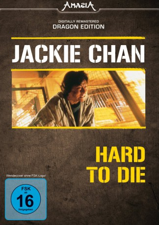

#7569 Hard to Die
 
 IMDB-Wertung: 6.8 / 10
IMDB-Wertung: 6.8 / 10  Metascore: 0
Metascore: 0 
Die Geschichte basiert auf einer wahren Begebenheit, der Entführung eines Hongkonger Geschäftsmannes. Dieser fühlt sich von einer Verbrecherbande bedroht und bekommt daher Inspektor Chan als Leibwächter. Der Inspektor glaubt erst nicht an die Ernsthaftigkeit der Bedrohung, doch dann wird der Geschäftsmann wirklich entführt. Bei der darauf stattfinden Verfolgungsjagd zwischen der Polizei und den Entführern kommt es zum Tod eines Streifenpolizisten.
Jahr: 1993
Dauer: 107 Minuten
FSK: 18
Land: Hong-Kong Studio: Chinatown CinemaTonspuren:
Untertitel: Deutsch,
Auflösung: 1080p (1920x1016) Größe: 10956 MB
Genre: Action, Drama, Krimi
Regisseur: Kirk Wong,  Jackie Chan
Jackie Chan
Drehbuch: Tin Nam Chun
Soundtrack:
Darsteller:
 Jackie Chan als Inspector Eddie Chan
Jackie Chan als Inspector Eddie Chan Kent Cheng als Detective Hung Ting-Bong
Kent Cheng als Detective Hung Ting-Bong- Kar-Ying Law als Wong Yat-Fei
- Pui-San Auyeung als Wong's wife
 Kai Man Tin als Hung's thug
Kai Man Tin als Hung's thug- Don LaFontaine als Trailer Announcer
 Ye Liu als Jackie chan , rumored
Ye Liu als Jackie chan , rumored Richard Epcar als Lead Chracter , uncredited
Richard Epcar als Lead Chracter , uncredited Mars als Bank Robber , uncredited
Mars als Bank Robber , uncredited- Ling Ling Pan als Ms. Gaga , uncredited
- Christine Ng als Gaga
- Blackie Shou Liang Ko als Captain Ko
- William Duen Wai-Lun als Superintendent Cheung
 Ken Lo als Ng Kwok Yan
Ken Lo als Ng Kwok Yan Fat Chung als Ng Kwok-Wah / Wu Kuo Hua
Fat Chung als Ng Kwok-Wah / Wu Kuo Hua- Fat Wan als Simen Ting / Simon Ting
- Pak-Wo Chu als Boat Captain
- Hsiang Lin Yin als
- Tak-Shing Lam als
- Rocky Lai als Taiwanese Gangster / Restaurant Owner
- Lee Chun Chi als
- James Jim-Si Ha als
- Chung Chi Li als Kidnapper's thug
- Kwok-Lok Yu als
- Christopher Chan Sai-Tang als Black Dragon's gangster
- Tak-Kwong Chan als
- Sai-Tang Chan als
- Yui-Wah Cheung als Black Dragon's gangster
 Chi Wai Wong als Black Dragon
Chi Wai Wong als Black Dragon- Cheng-Lin Huang als Black Dragon's gangster
- Gam-San Leung als Data Center Manager
- Tat-Kwong Chan als Robber
- Yao Wang als Kidnapper in Taiwan
- Man-Kwong Fung als Taiwan cop
- Simon Cheung Yuk-San als Policeman
- Wah Cheung als Black Dog
- David Thomas als Inspector Eddie Chan as Inspector Jackie Chan , uncredited
Datei: X:\HD-Eastern-Collections\Jackie Chan\Hard to Die (1993, FSK18, 1920x1016).mkv seit 21.11.2017
Festplatte: HD Eastern+Western
 Es gibt insgesamt 58 Filme in der Gruppe 'HD-Eastern-Collections\Jackie Chan'
Es gibt insgesamt 58 Filme in der Gruppe 'HD-Eastern-Collections\Jackie Chan'